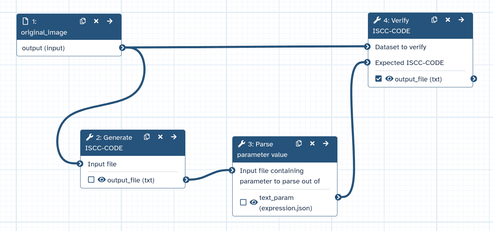
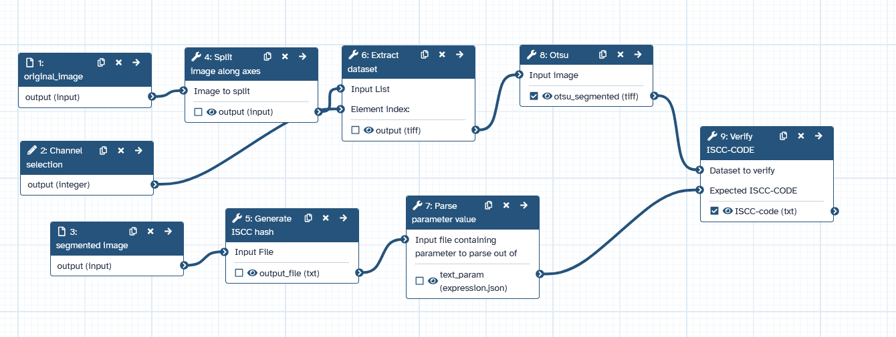
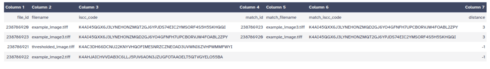

File content and integrity validation with International Standard Content Code (ISCC)
In scientific workflows, ensuring data integrity and tracking modifications of the data content is crucial for reproducibility. Traditional checksums (like MD5 or SHA) can verify if files are identical, but they cannot detect similar content or survive format conversions.
The International Standard Content Code (ISCC) is a content-derived identifier that provides both:
Identity verification: Checksum functionality to verify exact file matches
Similarity detection: Ability to detect similar content even across different file formats
The Galaxy ISCC-suite allows you to integrate content tracking into any Galaxy workflow, providing quality control and provenance tracking for your data analysis pipelines.
ISCC Code structure
An ISCC-SUM code is a 55-character identifier with two main components, which are combined into one code:
Data-Code: Content-based hash that allows similarity comparison
Instance-Code: A fast checksum or cryptographic hash
The Instance-Code uses BLAKE3 hashing, truncated to 64 bits by default. For applications requiring cryptographic-strength verification, ISCC-SUM can output the full 256-bit hash.
You might notice that the combined ISCC-CODE (K4AI...) looks completely different from these two components. That is expected: the ISCC algorithm takes shortened versions of both hashes, packs them together, and encodes the result as a new string. Think of it like combining two barcodes into a single, shorter barcode — the information is still there, just represented differently.
Files with similar content will have similar Data-Code components, but their Instance-Code will be different. Hence the Instance-Code allows to verify file integrity.
For this tutorial, we’ll use a simple dataset with microscope images that demonstrate different use cases. However, the ISCC SUM tools can ben used for any type of digital content.
Get the data
Hands On: Data Upload
Create a new history for this tutorial in Galaxy.
To create a new history simply click the new-history icon at the top of the history panel:
Download the following image and import it into your Galaxy history.
Click galaxy-uploadUpload at the top of the activity panel
Select galaxy-wf-editPaste/Fetch Data
Paste the link(s) into the text field
Press Start
Close the window
Generate ISCC codes
The first step is generating ISCC codes for your input files. This creates a content fingerprint that can be used for later content-based identification of the file (e.g., within your workflow or within a publication).
Hands On: Generate ISCC codes for input files
Generate ISCC-CODE ( Galaxy version 0.1.0+galaxy1) with the following parameters:
param-file“Input File”: Select the first example image (example_image.tiff.)
Run the tool. This will generate a 55-character ISCC code for the file.
Expand the history item for the output of the Generate ISCC-CODE ( Galaxy version 0.1.0+galaxy1) tool.
Click on the details icon.
Scroll down to the Job Outputs section. Select the Dataset. You should see a single line containing the ISCC code in the output. For the first example image the code is expected to be:
Repeat for the other example images to generate another ISCC code for comparison.
Question
Will the same file always generate the same ISCC code?
Yes! The same file will always generate the identical ISCC code, making it suitable for integrity verification.
Verify file integrity
During workflow execution, you may want to verify that intermediate files match expected content. The Verify ISCC hash tool allows you to check if a file matches a known ISCC code.
Manual verification
Hands On: Verify a file against its ISCC code
Run Verify ISCC-CODE ( Galaxy version 0.1.0+galaxy1) with the following parameters:
param-file“Dataset to verify”: Select the first example image
“Expected ISCC-CODE”:
“Expected ISCC code”: Paste the ISCC code you generated in the previous step
Expand the history item for the output of the Verify ISCC-CODE ( Galaxy version 0.1.0+galaxy1) tool.
Click on the details icon.
Scroll down to the Job Output section. Select the output to expand it, this will show you verification report, that looks like this:
OK - ISCC-CODEs match
Expected: K4AI45QGX6J3LYNEHONZMQT2GJ6YPJDS74EIC2YMSORF4S5H5SKHQQI
Generated: K4AI45QGX6J3LYNEHONZMQT2GJ6YPJDS74EIC2YMSORF4S5H5SKHQQI
The report shows:
Status: OK (match) or FAILED (mismatch)
Expected ISCC code
Generated ISCC code
Workflow integration
A powerful use case is integrating ISCC verification directly into your workflows. Here we’ll build a simple verification workflow step by step.
Step 1 - Define the workflow inputs
To make the workflow reusable, we need to define two inputs: the image to verify and a file containing the expected ISCC code.
Hands On: Create the workflow inputs
Create a new workflow in the workflow editor.
Click Workflow on the top bar
Click the new workflow galaxy-wf-new button
Give it a clear and memorable name
Clicking Save will take you directly into the workflow editor for that workflow
Need more help? Please see the How to make a workflow subsectionhere
Select toolInput dataset from the list of tools:
param-file1: Input Dataset appears in your workflow.
Change the “Label” of this input to Input image.
Add another toolInput dataset:
param-file2: Input Dataset appears in your workflow.
Change the “Label” of this input to Expected ISCC code file.
Step 2 - Parse the expected ISCC code
The Generate ISCC-CODE tool outputs the ISCC code as a text file, but the Verify ISCC-CODE tool expects the code as a parameter input. We use Parse parameter value to bridge this gap.
Hands On: Add the parameter parsing step
While in the workflow editor, add toolParse parameter value from the list of tools:
Connect the output of param-file2: Expected ISCC code file to the “Input file containing parameter to parse” input of tool3: Parse parameter value.
Step 3 - Add the verification step
Now we add the ISCC verification tool and connect all the inputs.
Hands On: Add the ISCC verification step
Add Verify ISCC-CODE ( Galaxy version 0.1.0+galaxy1) from the list of tools:
Connect the output of param-file1: Input image to the “Dataset to verify” input of tool4: Verify ISCC-CODE.
Connect the output of tool3: Parse parameter value to the “File containing expected ISCC code” input of tool4: Verify ISCC-CODE.
The completed workflow should look like this:

Step 4 - Run the workflow
Hands On: Run the verification workflow
Run the workflow with the following inputs:
Input image: Select the first example image (example_image.tiff)
Expected ISCC code file: Select the ISCC code output generated in a previous step
Wait for the workflow to complete. Subsequently , expand the history item for the output of the Verify ISCC-CODE ( Galaxy version 0.1.0+galaxy1) tool.
Click on the details icon.
Scroll down to the Job Output section and select the output dataset. You should see a verification report similar to the one described in the manual verification section above.
When placing this verification step in a full workflow, it can help validate that your processing didn’t unexpectedly alter the content.
Image analysis workflow integration
This can be applied in an image analysis workflow to verify an image processing tool provides the expected reproducible output. In the example files we shared, a thresholded image example_thresholded1.tiff can be found. We will use it to verify whether the Otsu threshold result of this image can be reproduced.
Click on galaxy-workflows-activityWorkflows in the Galaxy activity bar (on the left side of the screen, or in the top menu bar of older Galaxy instances). You will see a list of all your workflows
Click on galaxy-uploadImport at the top-right of the screen
Paste the following URL into the box labelled “Archived Workflow URL”: https://training.galaxyproject.org/training-material/topics/imaging/tutorials/iscc-suite/workflows/ISCC---image-analysis-workflow-example.ga
Click the Import workflow button
Below is a short video demonstrating how to import a workflow from GitHub using this procedure:
Video: Importing a workflow from URL
Provide the inputs:
Original image: Select example_image.tiff - the image to be processed
Segmented image: Select example_thresholded1.tiff - the reference segmentation to compare against
Run the workflow.
Expand the history item for the output of the Verify ISCC-CODE ( Galaxy version 0.1.0+galaxy1) tool.
Click on the details icon.
Scroll down to the Job Information section to view the “Tool Standard Output” log. You should see a verification report similar to the one described in the manual verification section above.
The workflow performs Otsu thresholding on the original image and verifies whether the result matches the expected segmentation using ISCC codes. This allows you to verify whether the thresholding method is working as expected and the algorithm has not been altered (e.g., in a new version).

Comment: When to use verification
Verification is particularly useful:
After file transfers or storage operations
To confirm correct input files in complex workflows
As quality control checkpoints in processing pipelines
To detect unintended data modifications
Detect similar content
One of ISCC’s unique features is detecting similar content, even across different formats. This is useful for finding duplicates, tracking content transformations, or identifying related files.
Compare two files
Hands On: Compare two files for similarity
Find datasets with similar ISCC-CODEs ( Galaxy version 0.1.0+galaxy1) with the following parameters:
“Input type”: Datasets to compare
param-file Select multiple datasets (or a collection, see below)
The tool will create tabular output which indicates which datasets are similar.
The table will list all the files that has been set as input. For the files which have a similar file, below the set threshold, the similar file is listed.
Find similar files in collections
When working with a collection of files, you can identify all similar items. This is particularly useful when you have large datasets and want to find duplicates or track how processing affects content similarity.
Hands On: Find similar files in a collection
Create a dataset collection with your test images
Click on galaxy-selectorSelect Items at the top of the history panel
Check all the datasets in your history you would like to include
Click n of N selected and choose Advanced Build List
You are in collection building wizard. Choose Flat List and click ‘Next’ button at the right bottom corner.
Double clcik on the file names to edit. For example, remove file extensions or common prefix/suffixes to cleanup the names.
Enter a name for your collection
Click Build to build your collection
Click on the checkmark icon at the top of your history again
Include all images from the tutorial: example_image.tiff, example_image2.tiff, example_image3.tiff and example_thresholded1.tiff
Find datasets with similar ISCC-CODEs ( Galaxy version 0.1.0+galaxy1) with the following parameters:
Examine the output table. Each row represents a file from your collection. The columns show:
The filename
Its ISCC code
Any similar files found (with their similarity score)
Files that share content (like example_image.tiff and example_image3.tiff, which is slightly modified ) will be grouped together, although their ISCC-SUM codes are different.

The Hamming distance counts how many bits differ between two Data-Codes. For the default 64-bit Data-Code, this ranges from 0 (identical) to 64 (completely different). The tool uses a default threshold of 12, meaning files with a distance of 12 or less are considered similar.
This threshold is a practical starting point — adjust it based on your use case: lower values for stricter matching, higher values to catch more distant similarities. Keep in mind that Data-Code similarity reflects byte-level similarity, not semantic content. Whether a given distance is scientifically meaningful depends on your domain and data.
Question
Looking at the similarity results table, why do example_image.tiff and example_image3.tiff show a match while example_thresholded1.tiff does not?
What does a distance value of -1 indicate?
example_image.tiff and example_image3.tiff contain similar visual content, resulting in a Hamming distance of 5, which is below the threshold of 12. The thresholded image has undergone significant processing (binarization), changing its content substantially so it no longer matches the original within the similarity threshold.
A distance of -1 indicates that no similar file was found within the specified threshold. The file is unique compared to all other files in the collection.
Practical use cases
Use case 1: Quality control in image analysis pipelines
When processing large microscopy datasets:
Generate ISCC codes for raw images upon acquisition
Detect if processing steps produce consistent outputs across batch runs
Identify accidentally duplicated samples before analysis
Use case 2: Data deduplication and organization
When managing growing image repositories:
Scan collections to find duplicate uploads that waste storage
Identify images that are near-duplicates (e.g., same sample, different export settings)
Group related experimental replicates automatically
Use case 3: Reproducibility and data sharing
When publishing or sharing datasets:
Include ISCC codes in data publications for recipient verification
Document the exact input files used in published analyses
Enable collaborators to confirm they have identical source data
Conclusion
In this tutorial, you learned to use the Galaxy ISCC-suite for content tracking and verification:
Generate ISCC-CODE: Creates content-based identifiers for any file
Verify ISCC-CODE: Confirms files match expected content at workflow checkpoints
Find datasets with similar ISCC-CODEs: Detects related or duplicate content in collections
These tools help you maintain data integrity throughout your analysis workflows, from initial data import through to final results.
References
ISCC - International Standard Content Code: https://iscc.codes/
Further information, including links to documentation and original publications, regarding the tools, analysis techniques and the interpretation of results described in this tutorial can be found here.
Feedback
Did you use this material as an instructor? Feel free to give us feedback on how it went.
Did you use this material as a learner or student? Click the form below to leave feedback.
Hiltemann, Saskia, Rasche, Helena et al., 2023 Galaxy Training: A Powerful Framework for Teaching! PLOS Computational Biology 10.1371/journal.pcbi.1010752
Batut et al., 2018 Community-Driven Data Analysis Training for Biology Cell Systems 10.1016/j.cels.2018.05.012
@misc{imaging-iscc-suite,
author = "Maarten Paul and Martin Etzrodt",
title = "Content Tracking and Verification in Galaxy Workflows with ISCC-SUM (Galaxy Training Materials)",
year = "",
month = "",
day = "",
url = "\url{https://training.galaxyproject.org/training-material/topics/imaging/tutorials/iscc-suite/tutorial.html}",
note = "[Online; accessed TODAY]"
}
@article{Hiltemann_2023,
doi = {10.1371/journal.pcbi.1010752},
url = {https://doi.org/10.1371%2Fjournal.pcbi.1010752},
year = 2023,
month = {jan},
publisher = {Public Library of Science ({PLoS})},
volume = {19},
number = {1},
pages = {e1010752},
author = {Saskia Hiltemann and Helena Rasche and Simon Gladman and Hans-Rudolf Hotz and Delphine Larivi{\`{e}}re and Daniel Blankenberg and Pratik D. Jagtap and Thomas Wollmann and Anthony Bretaudeau and Nadia Gou{\'{e}} and Timothy J. Griffin and Coline Royaux and Yvan Le Bras and Subina Mehta and Anna Syme and Frederik Coppens and Bert Droesbeke and Nicola Soranzo and Wendi Bacon and Fotis Psomopoulos and Crist{\'{o}}bal Gallardo-Alba and John Davis and Melanie Christine Föll and Matthias Fahrner and Maria A. Doyle and Beatriz Serrano-Solano and Anne Claire Fouilloux and Peter van Heusden and Wolfgang Maier and Dave Clements and Florian Heyl and Björn Grüning and B{\'{e}}r{\'{e}}nice Batut and},
editor = {Francis Ouellette},
title = {Galaxy Training: A powerful framework for teaching!},
journal = {PLoS Comput Biol}
}
Congratulations on successfully completing this tutorial!
You can use Ephemeris's shed-tools install command to install the tools used in this tutorial.
Questions: